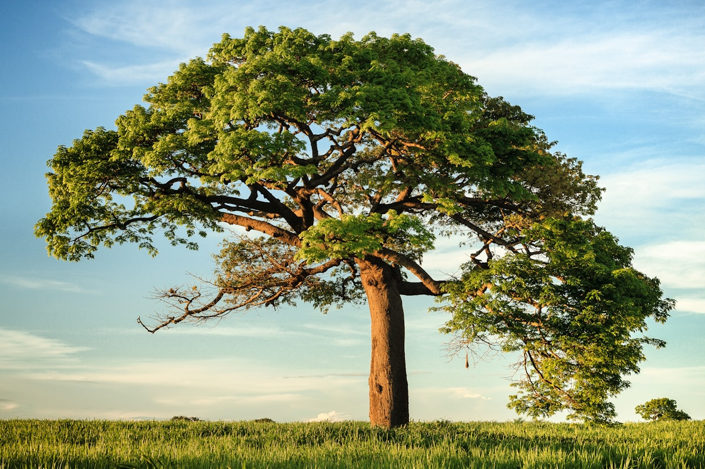
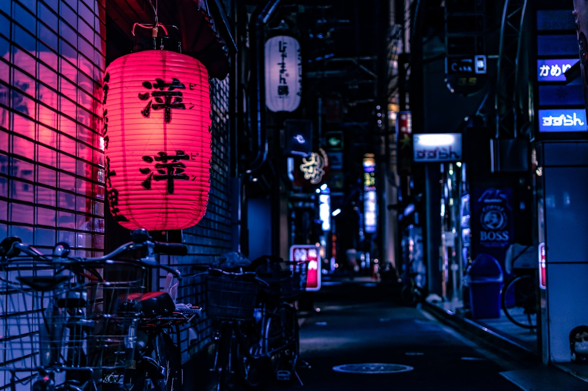
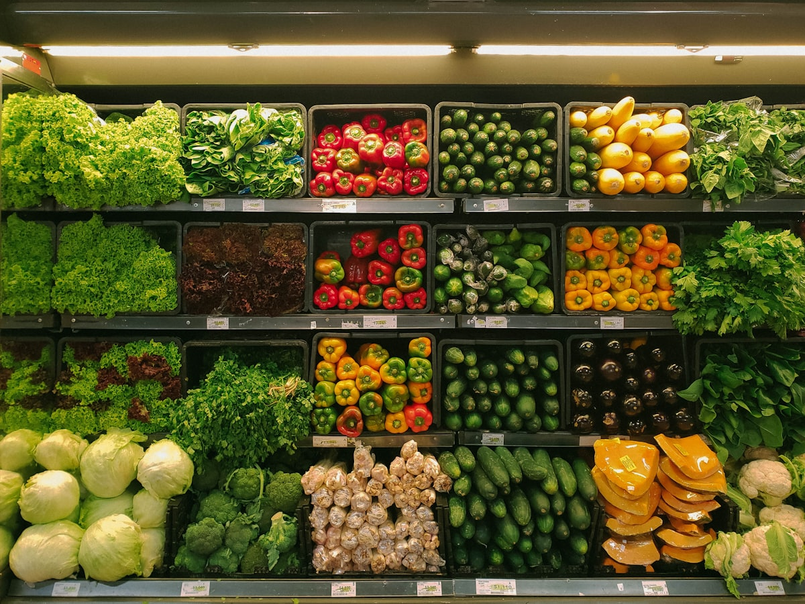
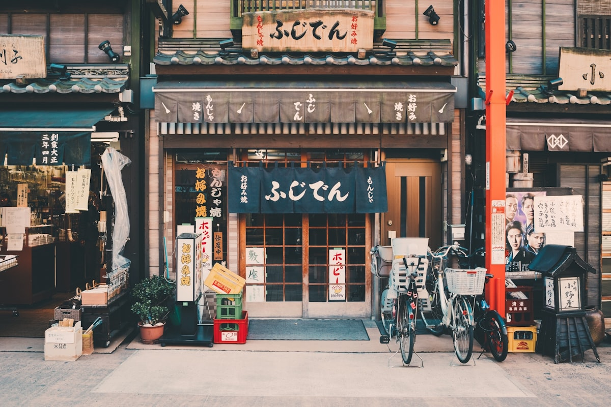
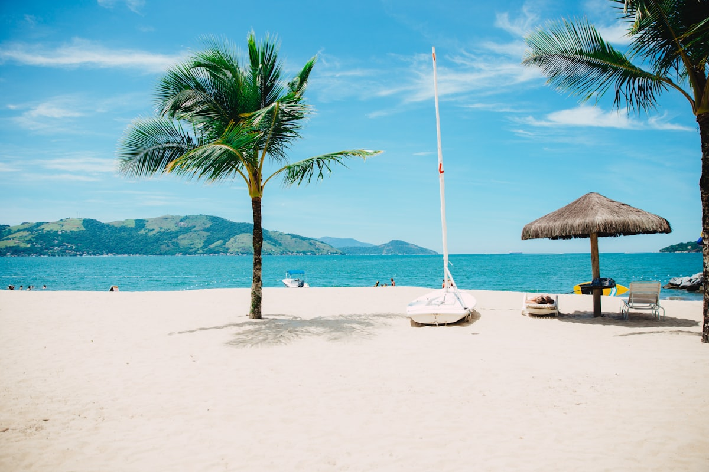

No.01
レインボーライン山頂公園
三方五湖と若狭湾を一望できる、嶺南随一の絶景スポット。山頂公園にはテラス・足湯・五木の鐘・縁結びの愛宕神社など見どころがいっぱい。リフトとケーブルカーで気軽に山頂へ。
又兵衛を拠点に楽しめる、
三方五湖エリアの10スポット。
又兵衛は美浜町・日向湖のほとりに建つ家族経営の小さな民宿。
車で15〜30分の範囲に、福井ならではの自然・歴史・グルメが詰まっています。
女将がおすすめする10スポットと、3つのモデルコースをご紹介します。
三方五湖と若狭湾を一望できる、嶺南随一の絶景スポット。山頂公園にはテラス・足湯・五木の鐘・縁結びの愛宕神社など見どころがいっぱい。リフトとケーブルカーで気軽に山頂へ。

名前のとおり、まるで水晶を散りばめたように透明度が高く美しい砂浜。「日本の渚百選」にも選ばれた屈指の海水浴場で、夏は若い世代に大人気。夕日の名所としても知られています。

三方湖・水月湖・菅湖・久々子湖・日向湖（又兵衛の前）の5つからなる湖群。塩分濃度が湖ごとに違い、それぞれ違う色合いを見せる神秘の景観。ラムサール条約登録湿地です。

三方五湖のうち4つの湖をクルーズ船で巡るネイチャークルーズ。湖と湖を結ぶ水路を抜ける瞬間は感動もの。お土産処・レストランも併設、車での観光拠点として便利。

5500年の歴史を秘めた鳥浜貝塚の出土品を展示する博物館。世界にも類を見ない年縞博物館も併設。火起こし体験など子ども向けプログラムも人気で、雨の日のお出かけにもおすすめ。

三方五湖の自然や生き物を学べる施設。湖の魚や水辺の生きもの展示、磯遊びやカヤック体験などのアクティビティも充実。雨の日でも楽しめる、子ども連れに人気のスポット。

海の幸と若狭名産が一堂に集まる大型物産館。へしこ・小鯛笹漬・鯖の浜焼など若狭のお土産はここで完結。レストランの海鮮丼も人気で、ドライブ休憩・お土産購入の鉄板スポット。

縄文時代から近世までの美浜町の歴史と暮らしを紹介する展示施設。漁村集落・舟屋文化・若狭の街道など、又兵衛のある日向の歴史背景を知るのにぴったり。雨の日にもおすすめ。

水晶浜と並ぶ美浜の海水浴場。比較的静かで落ち着いた雰囲気で、家族連れにも人気。透明度の高い若狭湾の海で、浮き輪を持って遊ぶ子どもの笑い声が響きます。釣りスポットとしても◎。

国の重要伝統的建造物群保存地区。鯖街道（若狭〜京都）の宿場町として栄えた、江戸の風情そのままの街並みは圧巻。古民家カフェやお土産屋さんで、ゆっくりと半日過ごせます。
どこから回ろう？と迷ったら、女将のおすすめコースをどうぞ。
体を動かしてリフレッシュ
子どもも大人も楽しめる
じっくり地域を味わう